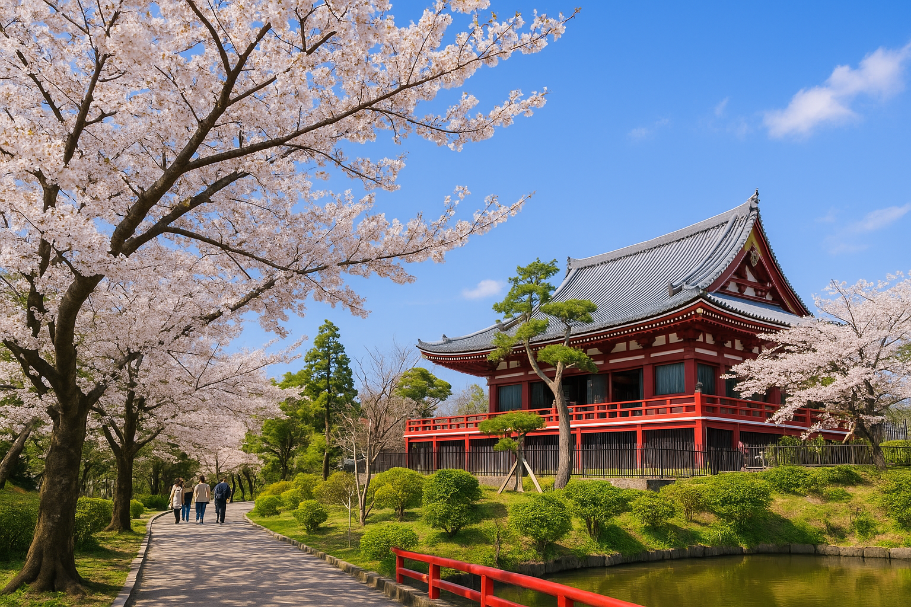
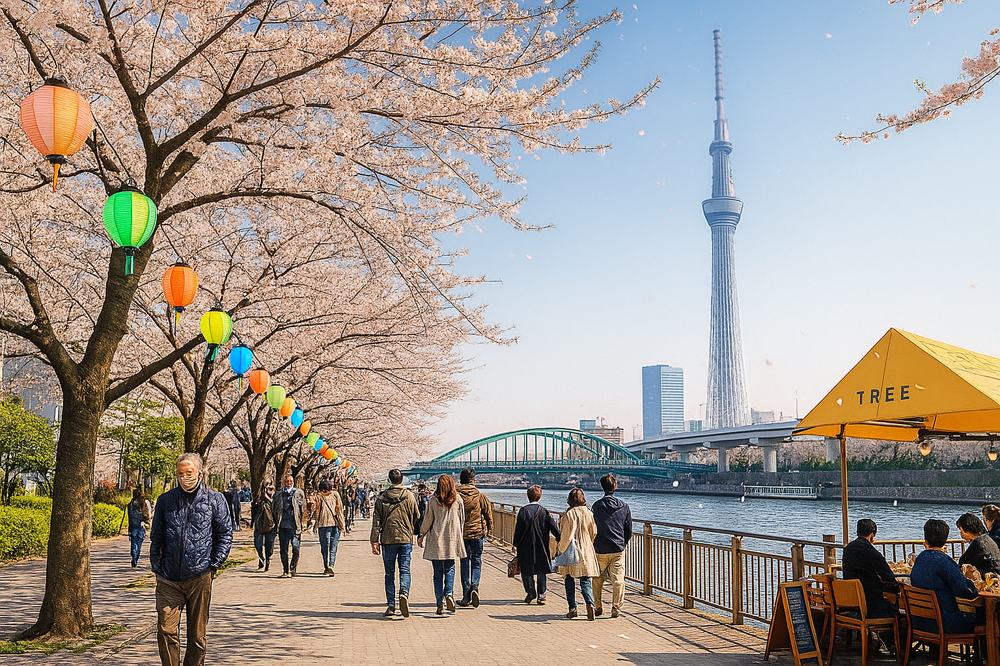
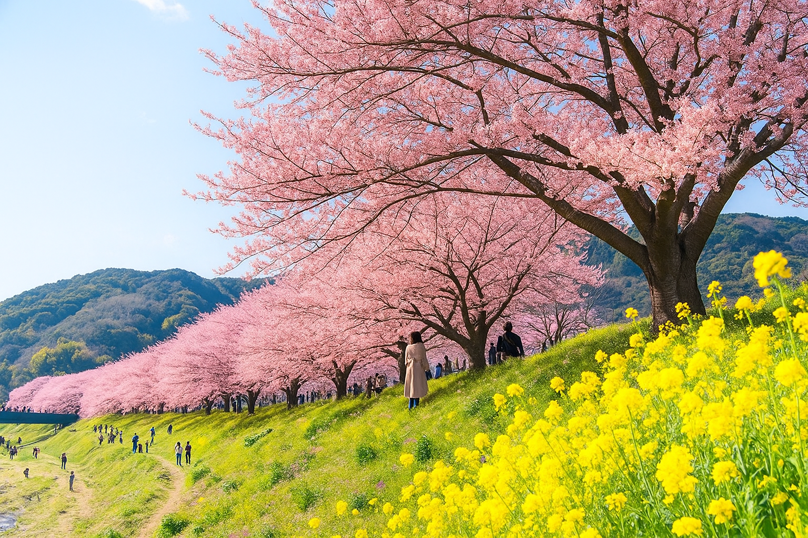
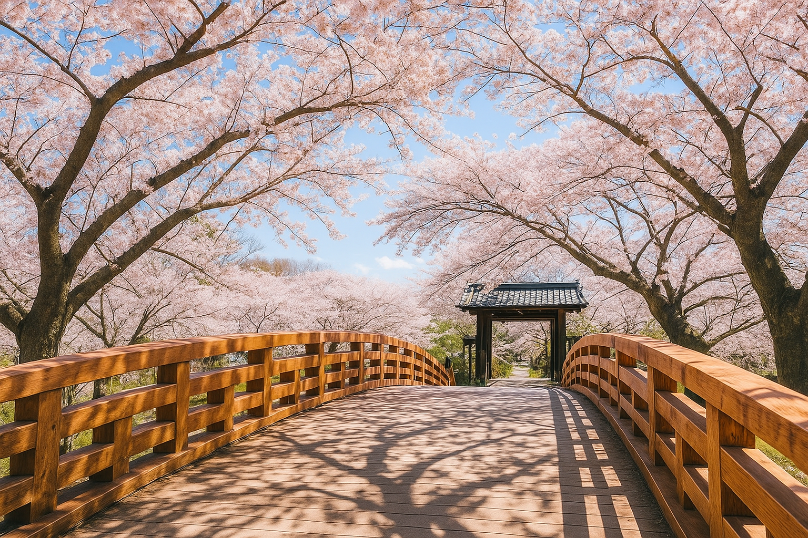
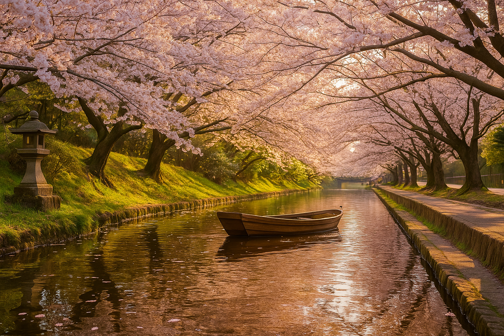
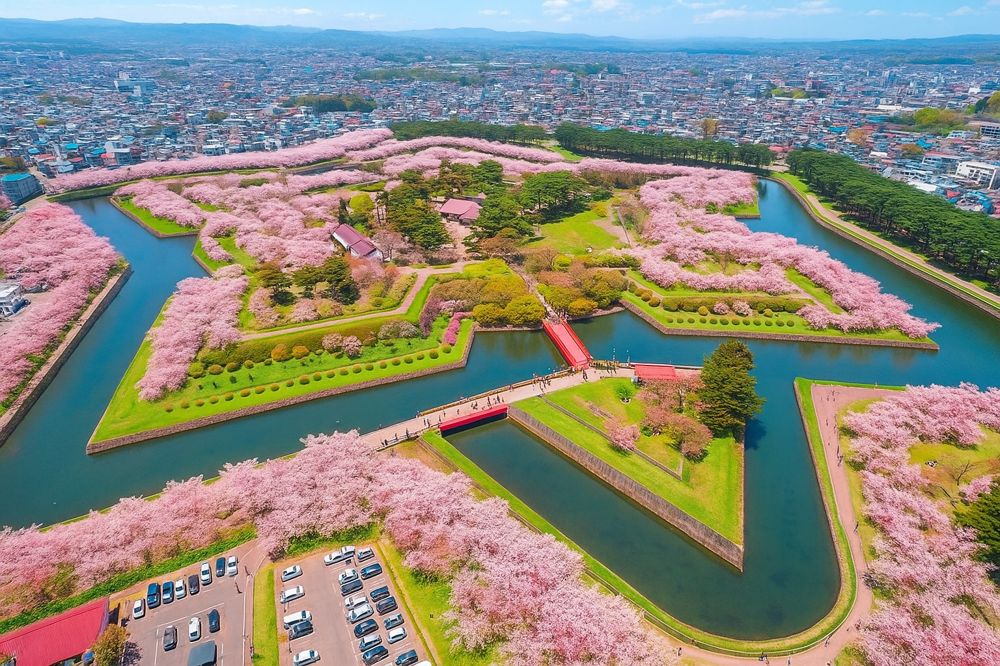

賞櫻之旅
關東
-

上野恩賜公園
香火鼎盛的東京代表寺廟，春日櫻花為雷門增添夢幻氛圍。
-

隅田公園
高聳於市區，春天塔下櫻花齊放，是賞花與遠眺夜景的絕佳地點。
中部
-

河津櫻並木
河岸櫻花盛開成粉色長廊，是東京最浪漫的步行賞櫻景點。
-

高遠城址公園
湖畔倒映著滿開櫻花，是文青最愛的自然系賞花秘境。
東北
-

弘前公園
千株櫻花齊放，花季時熱鬧非凡，是東京經典花見首選。
-
角館武家屋敷
遼闊草地與成排櫻花，是家庭野餐與春遊的熱門場所。
關西
-

吉野山
融合日式與西式庭園，櫻花品種繁多，景致典雅。
-

哲學之道
護城河沿岸櫻花如雲，夜間點燈更顯浪漫氛圍。
東北
-

五稜郭公園
星形城郭配上櫻花絢爛美景，是北國春季的絕佳拍照地。
-

北海道神宮
近郊登山賞花路線，春日沿途櫻花點綴，是自然系旅人的最愛。
不知道從何開始嗎，讓我為你推薦一條櫻花旅途...............
東京鐵塔櫻花大道
清晨來到東京鐵塔，沿著塔下的櫻花大道悠閒散步。盛開的櫻花為城市地標增添柔和色彩，漫步於花海中，能一邊感受現代都市的脈動，一邊享受粉色春光，留下專屬於東京的浪漫回憶。
五稜郭星形櫻花巡禮
午後搭乘新幹線北上，前往北海道的五稜郭公園。星形護城河畔櫻花齊放，湖水倒映粉嫩花影，微風中花瓣紛飛如雪。 沿著城郭步道走一圈，體驗春日北國獨有的靜謐與壯麗。